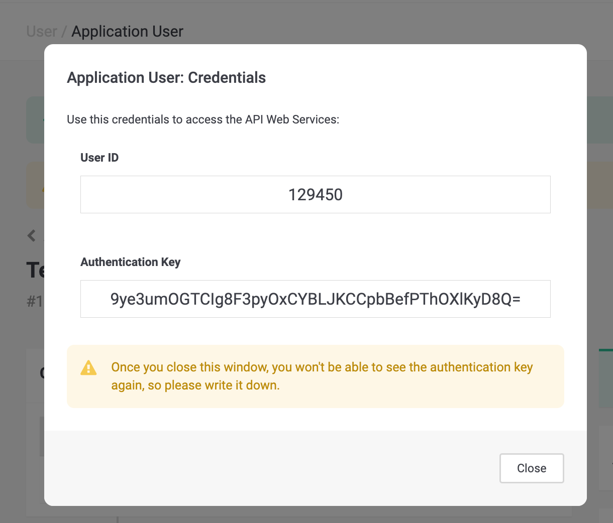

PostFinance Checkout Plugin pour Shopware 6
Documentation
1Sommaire
Le plugin de paiement PostFinance Checkout intègre un traitement moderne des paiements dans Shopware 6, offrant des fonctionnalités telles que les paiements basés sur iFrame, les remboursements, les captures et la conformité PCI. Il permet une intégration transparente avec le portail PostFinance Checkout pour la gestion des transactions et des méthodes de paiement.
Important : Veuillez noter que seules les mises à jour majeures (par exemple 6.x.0.0) et mineures (par exemple 6.0.x.0) seront testées pour la compatibilité dans les 2 semaines suivant la publication.
2Pré-Requis
Shopware Version: 6.5.x, 6.6.x or 6.7.x (voir tableau de compatibilité).
PHP: Version minimale requise pour votre installation Shopware (e.g., 7.4+).
Compte PostFinance Checkout: Obtenir Space ID, User ID, et clé API du Portail PostFinance Checkout (voir le Guide de démarrage du Portail).
3Compatibilité
Version Shopware |
Version du Plugin |
Version PHP |
Support jusqu’à |
6.7.x |
7.x.x |
PHP 8.2 et 8.3 |
En cours |
6.6.x |
6.x.x |
PHP 8.2 et 8.3 |
Décembre 2025 |
6.5.x – Obsolète |
5.x.x |
PHP 8.2 et 8.3 |
Octobre 2024 |
4Installation
4.1Via Marketplace
-
Connectez-vous au backend de votre boutique Shopware.
-
Naviguez vers Paramètres → Système → Plugins.
-
Cliquez sur la flèche du menu et sélectionnez le lien d’installation du plugin à installer
-
Activez le plugin PostFinance Checkout à partir du gestionnaire de plugins
4.2Via Composer (Recommendé)
-
Naviguez jusqu’au répertoire racine de votre Shopware.
-
Exécutez:
composer require postfinancecheckout/shopware-6 php bin/console plugin:refresh php bin/console plugin:install --activate --clearCache PostFinanceCheckout
4.3Via Composer (Recommended)
Téléchargez la dernière version.
. Extrayez le ZIP dans custom/plugins/
. Exécutez
+
php bin/console plugin:refresh
php bin/console plugin:install --activate --clearCache PostFinanceCheckout4.4Si PostFinanceCheckout n’apparaît pas dans les paramètres
Vous devez exécuter la commande suivante
bin/build-administration.sh5Guide de démarrage pour le Portail
Allez sur hhttps://checkout.postfinance.ch/en-ch/user/signup[PostFinance Checkout] et créez un Compte si vous n’en avez pas déjà un
|
Tip
|
Veuillez sélectionner le plan d’abonnement approprié - il doit prendre en charge les transactions de e-commerce. |
5.1Créez la clé API:
-
Une fois que votre compte est activé, naviguez vers Compte → Utilisateurs de l’application

-
Cliquez sur Créer un utilisateur d’application

-
Spécifiez un nom pour cette Clé API - par exemple Test Shop - et cliquez sur Créer un utilisateur user

-
Votre utilisateur d’application est ainsi créé. Veuillez copier l’User ID et la Clé d’authentification, car vous en aurez besoin pour reliez votre magasin au portail.
 -
Enfin, vous devrez accorder certaines autorisations à cet utilisateur d’application afin qu’il puisse communiquer avec votre espace. Pour ce faire, sous Rôle, naviguez jusqu’à Gérer.

-
Cliquez sur le sign + à côté de Space Roles

-
Veuillez ajouter le rôle Space Admin et cliquez sur and click on Assign Role.
TipVeuillez noter que le chargement des rôles peut durer quelques secondes. 
-
Enfin, cliquez sur Enregistrer les Roles; vous devrez entrer votre mot de passe pour confirmer.

5.2Configurer les modes de paiement
Vous pouvez maintenant configurer les méthodes de paiement que vous souhaitez utiliser ; à des fins de test, nous utiliserons le Bogus Processor. Veuillez noter que si vous souhaitez effectuer une transaction de production, vous pouvez utiliser notre offre Payfac ou vous connecter directement à un PSP spécifique (Worldline ; ACI ; …).
-
Naviguez vers Space → Paramètres et cliquez sur Processors

-
Cliquez sur Configurez le processeur
-
Sélectionnez Bogus Processor et cliquez sur Continue

-
Définissez le nom que vous souhaitez donner à votre processeur - e.g. Test Processor - et cliquez sur Créer

-
Sélectionnez tous les connecteurs qui s’appliquent et cliquez sur Enregistrer
TipVeuillez noter que les connecteurs semblent faire double emploi, mais c’est parce que l’un concerne le paiement par terminal physique et l’autre le paiement par ecommerce.
Les méthodes de paiement sont désormais disponibles dans le portail.
6Guide de démarrage pour Shopware
-
Identifiants API
-
Naviguez vers Shopware Admin → Paramètres → Extensions → PostFinance Checkout et cliquez sur Sauvegarder.
-
Entrez votre
Space ID,User ID, etclé API-
Pour le Space id; vous pouvez naviguer vers le Space et il sera fourni - par exemple, l’identifiant du Space id = 76231

-
-
-
Méthodes de Paiment
Les méthodes de paiement disponibles à la caisse sont gérées par le Portail PostFinance Checkout. Si vous souhaitez désactiver une méthode de paiement, vous devez la désactiver à partir du portail.
NoteVeuillez noter qu’en raison de la synchronisation entre le portail et la boutique, vous pouvez effectuer la même opération à partir de la boutique, sous Paramètres → Méthodes de paiement. -
a.Allez dans Space → Paramètres → Paiements → Méthodes de Paiement

-
Sélectionnez le mode de paiement que vous souhaitez désactiver. Cliquez sur le curseur pour le désactiver → il devrait devenir inactif.

 Tip
TipSi vous souhaitez désactiver uniquement un Connecteur d’un mode de paiement (par exemple, Mastercard pour une carte de crédit), veuillez consulter la section Connecteur.
-
-
Options
-
Space View Id: Ce champ vous permet d’appliquer un style personnalisé au formulaire et à la page de paiement. Le style est défini dans les paramètres de votre espace dans le portail.
NoteVeuillez noter que si vous n’utilisez pas Space View Id, cette option doit rester vide. -
Intégration: Le paramètre Options d’intégration détermine comment le formulaire de paiement est affiché pendant la procédure de paiement. Les options suivantes sont disponibles :
-
IFrame: Incorpore le formulaire de paiement directement dans la page de paiement de Shopware pour une expérience transparente.
-
Lightbox: Ouvre une fenêtre contextuelle sécurisée pour que les clients puissent effectuer leur paiement sans quitter la page de paiement.
-
Payment Page: Redirige les clients vers une page de paiement dédiée, hébergée par le fournisseur de paiement.
-
-
Consistence des articles: Shopware calcule les taxes au niveau de l’article, ce qui peut entraîner des différences mineures (généralement de quelques centimes) entre le total des taxes de la commande et le prix affiché. Cet écart est dû à des différences d’arrondi lors du calcul de chaque article. Si le paramètre « Renforcer la cohérence » est activé, le portail rejettera automatiquement les commandes présentant de tels écarts. Pour éviter les problèmes liés au traitement des paiements, nous vous recommandons de désactiver ce paramètre, à moins qu’une validation stricte du total des taxes ne soit nécessaire.
-
Envoyer un email de confirmation de commande: Activez cette option pour envoyer des emails de confirmation de commande directement depuis Shopware au lieu du portail.

-
7Différents Etats pour une Transaction
Le processus de paiement de PostFinance Checkout est complètement standardisé pour chaque méthode de paiement que vous pouvez traiter. Cela vous permet d’ajouter simplement une méthode de paiement ou un processeur sans modifier la configuration de votre Shopware. Une vue d’ensemble des états et des processus de paiement de PostFinance Checkout peut être trouvée dans la documentation sur les paiments..
Dans la section suivante, nous vous donnons un aperçu de la façon dont les états de PostFinance Checkout sont mappés dans le graphique des états de Shopware pour les commandes et les états de paiement.
7.1Cartographie des différents états d’une commande de Shopware
Actuellement, nous ne modifions pas l’état de la commande. Nous ne modifions que l’état du paiement et l’état de la livraison.
7.1.1Remarque générales concernant les status des commandes
Nous vous recommandons de ne modifier l’état de la commande que lorsque l’état du paiement est définitif (Payée, Annulée ou Echouée) .
7.2Cartographie des différents états du paiement de Shopware
Vous trouverez ci-dessous un diagramme qui montre l’association des différents états de Shopware pour l’état de paiement pour PostFinance Checkout, ainsi que des informations supplémentaires sur les transitions entre les états.

-
Si la transaction est
Autoriséedans PostFinance Checkout, le statut du paiement de la commande dans le Shopware est marqué comme étantEn Cours. -
Si la transaction échoue avant ou pendant le processus d’autorisation, le statut du paiement de la commande du Shopware est marqué comme
Échouée. -
Si la transaction échoue après l’autorisation, le statut du paiement de la commande du Shopware est marqué comme
Annulée. -
Si la facture de la transaction dans PostFinance Checkout est marquée comme
PayéeouNon Applicable, le statut du paiement de la commande dans le Shopware est marqué commePayée.
7.2.1Remarques générales concernant les différents status pour les paiements
Nous vous recommandons de ne pas modifier manuellement l’état du paiement. Si vous le faites, il peut être modifié à nouveau par le plugin.
7.3Carthographie des différents états de livraison chez Shopware
Vous trouverez ci-dessous un diagramme qui montre les différents états pour la livraison chez Shopware avec des informations supplémentaires pour les transitions d’états.

-
Si la transaction est
confirméedans PostFinance Checkout, le statut de livraison de la commande dans le Shopware est indiqué comme étantEn Attente. -
Si la transaction dans PostFinance Checkout est marquée comme
Délivrée, le statut de livraison de la commande Shopware est marqué commeOuvert. -
Si la transaction est en statut
Déclinée,ÉchouéeouAnnulée, le statut de livraison de la commande du Shopware est marqué commeAnnulée.
8Gestion des Transactions
Vous pouvez capturer, annuler et rembourser des transactions directement depuis le backend de Shopware. Veuillez noter que si vous remboursez, annulez ou capturez des transactions dans PostFinance Checkout, les événements seront synchronisés dans Shopware. Cependant, il y a quelques limitations (voir ci-dessous).
8.1Complete (capture) an order
Vous avez la possibilité pour vos transactions de n’autoriser le paiement qu’une fois la commande passée. Dans la configuration du connecteur, vous avez la possibilité, si la méthode de paiement le permet, de définir si le paiement doit être effectué immédiatement ou différé.
Pour capturer une transaction, ouvrez la commande et cliquez sur le bouton Terminer.
|
Note
|
Lorsque le paiement est en attente dans PostFinance Checkout, la commande reste en attente. |

Finalisation du paiement de manière différée
Les détaillants souhaitent souvent autoriser les transactions et lancer le processus d’exécution une fois que tous les articles peuvent être expédiés. Cela est également possible avec PostFinance Checkout.
Cependant, certains processus doivent être suivis. Si vous avez configuré la finalisation du paiement pour qu’il soit différé, vous devez capturer la transaction avant d’initier l’expédition, car il peut toujours arriver qu’une finalisation échoue. Si vous voulez être sûr de ne pas expédier d’articles pour lesquels vous n’avez pas été payé, vous devez reporter l’expédition jusqu’à ce que l’état Confirmé soit atteint. Au départ, la transaction sera dans l’état Autorisé dans PostFinance Checkout et En cours dans Shopware. Si vous souhaitez lancer le processus d’exécution, assurez-vous de lancer le processus d’achèvement comme décrit ci-dessus. Une fois le processus terminé avec succès, la commande passera à l’état Confirmée dans PostFinance Checkout et à l’état Payée dans Shopware. Vous pouvez maintenant lancer le processus de livraison .
8.2Annuler une transaction
Pour annuler une transaction, ouvrez la commande et cliquez sur le bouton Annuler l’autorisation.
|
Note
|
Vous ne pouvez annuler que les transactions qui ne sont pas encore complétée.. |

8.3Remboursement d’une transaction
Vous avez la possibilité de rembourser des transactions déjà effectuées. Pour ce faire, ouvrez l’ordre saisi. En cliquant sur les 3 points (…) sur un article, vous pouvez rembourser l’article partiellement (s’il a une quantité supérieure à 1), ou vous pouvez rembourser l’article en entier. Si la méthode de paiement ne prend pas en charge les remboursements, vous n’aurez pas la possibilité d’effectuer des remboursements en ligne.
Vous pouvez effectuer autant de remboursements individuels que vous le souhaitez jusqu’à ce que vous ayez atteint le montant total de la commande initiale. Le statut de la commande passe alors automatiquement à completée.
|
Note
|
Il peut s’écouler un certain temps avant que vous ne voyiez le remboursement dans Shopware. Les remboursements ne seront visibles que lorsqu’ils auront été traités avec succès. |
8.4Commandes en attente
La livraison ne doit pas être effectuée tant que l’état de la livraison est en attente. Cela se produit lorsque la transaction dans PostFinance Checkout n’a pas atteint l’état Confirmé.
Il y a essentiellement deux raisons pour lesquelles cela peut se produire :
-
La transaction n’est pas terminée. Dans ce cas, vous devez compléter la transaction comme indiqué ci-dessus..
-
Nous ne sommes pas en mesure de déterminer si vous devez honorer la commande. La décision de livraison est prise automatiquement. Si cela ne se produit pas dans le délai défini, PostFinance Checkout génère une tâche manuelle que vous devez observer et suivre les instructions.
Vous trouverez plus d’informations sur les tâches manuelles dans notre Documentation sur les Tâches Manuelles..
8.5Limites de la synchronisation entre PostFinance Checkout et Shopware
Veuillez noter que les captures, annulations et remboursements effectués dans PostFinance Checkout sont synchronisés. Cependant, il y a quelques limitations. Dans PostFinance Checkout, vous pouvez modifier le prix unitaire et la quantité en une seule fois. Cela n’est pas possible dans le backend du Shopware. Nous vous recommandons donc d’effectuer les remboursements toujours dans le backend de Shopware et non dans PostFinance Checkout. Si un remboursement ne peut pas être synchronisé, il sera envoyé au processeur, mais il se peut que vous ne le voyiez pas dans votre backend Shopware.
Vous pouvez trouver plus d’informations sur les remboursements dans PostFinance Checkout dans notre Documentation sur les Remboursements..
8.6Tokenisation
Si la méthode de paiement prend en charge la tokenisation, vous pouvez stocker les détails de paiement de votre client pour des achats futurs. Afin d’utiliser cette fonctionnalité, assurez-vous que le Mode de paiement en un clic dans la configuration de votre méthode de paiement est réglé sur autoriser ou forcer le stockage.
|
Note
|
La tokenisation n’est pas disponible pour les paiements par les invités. |
8.7Paiements récurrents
Shopware fournit le package "Shopware Commercial" avec des fonctionnalités supplémentaires, entre autres, les abonnements. Ce plugin prend en charge les paiements adaptés aux abonnements. Tant que le connecteur de la méthode de paiement prend en charge la tokenisation, il peut être utilisé pour les abonnements. Le paiement récurrent est entièrement géré par le plugin Shopware Commercial. Veuillez vous référer à leur documentation pour plus d’informations.
8.8Caractéristiques Pricinpales
-
Intégration iFrame: Intégrez des formulaires de paiement directement dans votre checkout.
-
Remboursements & Captures: Déclenchez des remboursements complets/partiels et des captures à partir de Shopware ou du portail PostFinance Checkout.
-
Support Multi-Magasins: Gérez les configurations sur plusieurs magasins.
-
Mises à jour automatiques: Les méthodes de paiement se synchronisent dynamiquement via l’API PostFinance Checkout.
-
Paiements récurrents: Effectuez des paiements récurrents avec les abonnements (Shopware Commercial) et PostFinanceCheckout.
8.9Troubleshooting
-
Logs: Vérifiez les logs des payments avec:
tail -f var/log/whitelabelname*.log -
Problèmes courants:
-
Assurez-vous que la commande
composer update whitelabelname/shopware-6est exécutée après les mises à jour. -
Vérifier que les identifiants de l’API correspondent à votre compte PostFinance Checkout.
-
8.10FAQs
Q: Comment s’assurer que la connexion entre le portail et la boutique fonctionne? A: Vous devez vérifier que les webhooks ont été correctement créés. Pour ce faire, naviguez vers votre espace dans le portail, allez dans Paramètres → Général → Webhook Listeners.


Q: Ce plugin prend-il en charge les paiements en un clic ? A: Oui, via la tokenisation dans le portail PostFinance Checkout.
Q: Comment gérer la conformité PCI ? A: Le plugin utilise l’intégration iFrame, réduisant les exigences PCI à SAQ-A.
Q: Le plugin prend-il en charge Apple Pay ? A: Oui, le plugin prend en charge les portefeuilles comme Apple Pay.
9Changelog
Pour les mises à jour spécifiques à une version, voir les GitHub Releases.
10Contribuer
Signaler les problèmes via GitHub Issues.
Suivez le Shopware Plugin Base Guide pour le développement.
11Support
Si vous avez besoin d’aide, n’hésitez pas à contacter notre support.